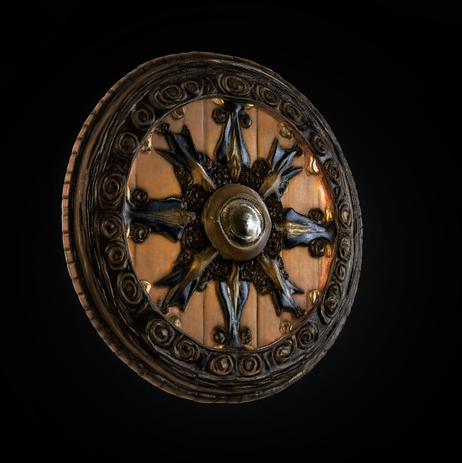

As Brulgwyn speaks those powerful words, the hammer atop the pedestal trembles ever so slightly. The carved stone of the statue seems to resonate with his declaration, the ancient runes glowing brighter.
For a moment, there is silence. Then, the hammer lifts from its resting place, floating in the air before gently settling into Brulgwyn's hands. The weight of it feels substantial, but not burdensome—a symbol of his unwavering loyalty and purpose.
The voice speaks again, this time softer, but full of respect:
"The Hammer of Loyalty has chosen you. Your path is heavy, but you carry it with conviction. The strength to fulfill your promise will guide your hands. Keep it close."
Brulgwyn now holds the Hammer of Loyalty, a weapon imbued with the resolve to fulfill his promises and the strength of his heart’s intent. Its magical aura hums with the power of dedication and duty.The next challenge awaits. Will Brulgwyn approach the next relic? Or will he take a moment to reflect?
Brulgwyn steps forward, his grip tightening on the Hammer of Loyalty as he approaches the next relic. The room seems to grow quieter, the air heavier with anticipation.
This time, the relic he faces is a shield—ornate and glowing, suspended in midair. The shield is carved with intricate designs, but one stands out: an image of a mother cradling a child, surrounded by protective hands. The shield radiates an aura of protection and guardianship.
As Brulgwyn approaches, the voice echoes through the chamber again:
"The Shield of Protection awaits one who defends not just with might, but with heart. Are you a guardian? A protector of those who cannot protect themselves? If you seek the strength to defend, approach with the same resolve."
The shield hovers before him, offering its power, but only if Brulgwyn proves his worth as a protector.
Will Brulgwyn choose to take the Shield of Protection? Or does he feel he must continue with his quest without it?
Brulgwyn steps forward, his hand extending toward the Shield of Protection. The moment his fingers graze the shield's surface, a warm, radiant energy pulses through him. It feels as though the shield recognizes the warrior's heart and his resolve to protect those he holds dear—his village, his people, and his promise.
The glowing shield settles into Brulgwyn's hands, its ornate carvings shimmering with a newfound brilliance. The image of the mother and child glows brighter, as if acknowledging Brulgwyn's dedication to protecting those who cannot defend themselves. The weight of the shield feels natural, fitting perfectly with his grip.
As Brulgwyn holds the shield, the voice resounds one final time:
"You are a true protector, Brulgwyn Burrowbranch. With this shield, you shall defend what is precious to you, and may its strength help guide you on your quest. The Shield of Protection will stand as a beacon in the darkest of times."
The chamber seems to calm, the other relics becoming still as Brulgwyn now holds both the Hammer of Loyalty and the Shield of Protection. A powerful energy courses through him, reinforcing his purpose and his commitment to his people.
The voice fades, leaving Brulgwyn in the silence of the chamber, but with a renewed sense of determination and power.
Brulgwyn finds a quiet corner of the chamber, away from the relics, and sets down his newly acquired shield and hammer. He carefully rests them beside him, feeling the weight of the responsibility they carry. The air in the chamber is thick with ancient magic, yet there’s a strange calm that settles over him.
As he sits, he focuses on steadying his breath and allowing his mind to relax. The weariness from the journey, the trials, and the emotional strain of his mission slowly begin to ease. The soft hum of the magic in the room wraps around him like a comforting blanket, helping him regain his strength.
After some time, he feels his body relax and his energy slowly return. The lingering exhaustion from his previous trials and the stress of his mission begin to dissipate, though the weight of his purpose remains.
He now feels ready to continue forward, but he knows the next step of his journey will be just as dangerous and filled with unknowns. The chamber, with its relics and its quiet reverence, has provided him with both physical rest and renewed purpose.
With his strength renewed, Brulgwyn gathers his weapons and shield, the weight of the ancient relics now a comforting presence at his side. The mysterious chamber behind him, with its echoes of forgotten power, feels like a distant memory as he steps forward, his resolve firmer than ever.
The path ahead is unclear, but Brulgwyn knows the way forward is the only option. He adjusts the grip on his hammer, the shield resting securely on his back, and steps out into the darkness, the only sound the faint crackle of energy in the air and his boots echoing softly on the stone floor.
As he proceeds, the way forward seems to twist and turn with a haunting, labyrinthine quality, as if the very walls themselves are shifting, testing his will. But his mind is focused on the task at hand—to save his people and fulfill the promise he made.
The air grows colder the deeper he goes, and soon, a faint glow begins to illuminate the passage ahead. Brulgwyn can sense that he is nearing something... powerful.
With a roll of 20, Brulgwyn moves through the area with exceptional stealth, making no sound and leaving no trace of his passage. He’s able to navigate through the cavern undetected, slipping past any potential threats.
As Brulgwyn continues, the air grows heavier, and the whispers from earlier seem to return, echoing softly in the distance. The deeper he goes, the more the sense of being watched grows. But, with his skillful movements, he remains hidden from any prying eyes.
With your roll of 19 on Sleight of Hand, Brulgwyn deftly maneuvers through the hidden paths, using his nimbleness to avoid any detection. As you make your way through the ancient chambers, you manage to subtly adjust a few of the relics in place, leaving no trace of your movements.
You feel confident that you have not disturbed anything that could trigger a trap or alert any watchful guardians of the Hollow. Your quiet and steady progress allows you to proceed with minimal risk.
As Brulgwyn moves deeper into the Hollow, the air grows colder, and the stone beneath his boots becomes slick with age. The faint echo of his footsteps fills the silence of the abandoned ruins, and the distant hum of magic seems to grow stronger.
The deeper you go, the more oppressive the atmosphere feels, as if the very walls are watching you, holding onto the secrets of the past. The path begins to narrow, and the once smooth walls of the Hollow are now jagged, adorned with strange runes that seem to shimmer faintly in the dim light.
After a few moments of cautious movement, you come to a fork in the path. One route seems to lead downward, into what could be an ancient chamber, while the other path leads deeper into the heart of the Hollow, where the air feels charged with energy.
Brulgwyn takes a deep breath, feeling the weight of the decision as he turns toward the path leading deeper into the heart of the Hollow. The air feels thick with power, and the eerie silence presses in on him from all sides. As he proceeds, the walls grow even more ancient, the runes more cryptic, glowing faintly in a language he does not understand.
The further he moves, the more oppressive the atmosphere becomes, as if the very essence of the Hollow is alive, watching him, perhaps even testing him. The stone beneath his boots becomes slicker, and the air feels colder with each step, like the heart of the Hollow itself is drawing closer.
After a short while, Brulgwyn rounds a corner and sees an imposing door. It is carved with intricate runes and adorned with symbols of protection and warding. At the center is a large circular pattern, which seems to pulse with energy. The door looks old, but it emanates a feeling of deep power.
As Brulgwyn approaches the door, a voice—soft and ancient—whispers in his mind, "Do you seek the cure, child of stone?"
With a roll of 4, Brulgwyn doesn't feel quite confident in reading the situation. The area around him feels charged with ancient energy, and the path ahead is still unclear. He senses that something important lies ahead but struggles to discern the deeper meaning.
Brulgwyn, fortified by the Shield of Protection, feels a renewed sense of strength and resilience. The shield’s energy hums as he grips it tightly, his resolve hardening as he presses on through the eerie, winding path.
The air grows colder, and the shadows seem to dance at the edge of his vision, but with the shield's protection, Brulgwyn feels a sense of security that he didn't have before. The way ahead is dark, but the shield's magic grants him an otherworldly sense of safety, and he continues down the path with renewed determination.
As he moves forward, the oppressive silence seems to intensify, broken only by the soft echo of his footsteps. He doesn't know exactly what lies ahead, but he knows this is the right direction—he’s one step closer to uncovering the cure for his village.
Would you like to proceed down the path, or would you like to do something else (such as performing another skill check, investigating your surroundings, or preparing for potential danger)?
With a total of 17 on your Investigation check, Brulgwyn scans the ancient, winding corridor of the Heart of the Hollow with a sharp eye.
The walls are etched with faded dwarven carvings—some speak of oaths made in blood, others of a sacred forge that once burned in the deep. Near the base of one wall, hidden behind old rubble, Brulgwyn uncovers a narrow side tunnel just large enough for him to squeeze through. Within, he finds a sealed stone coffer adorned with the emblem of Thramdor—the same divine symbol as his amulet.
It’s locked with a complex mechanism, but Brulgwyn notices it has runic slots that match the pattern glowing faintly on the Root carving he used earlier...
Would you like to try opening the coffer, or continue onward down the main tunnel?